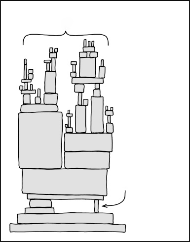

Lunch & Learn · 20. november
Bygg i det åpne
Hvorfor alt jeg lager er offentlig, og hva det har lært meg.
MV
Morten Victor Nordbye Senior Platform Engineer
Del to etter Nima sin presentasjon om datasenteret i kjelleren.
Plan: litt om åpen kildekode først. Så viser jeg ekte ting: repoet, dokumentasjonen, bloggen og sideprosjektene.
Få lysbilder, mye demo. Spør underveis.
Først: grunnlaget
Hva er åpen kildekode?
Kildekode som alle kan lese , endre og dele videre . Lisensen bestemmer reglene.
MIT · Apache 2.0 Tillatende Bruk koden til hva du vil, også i lukkede produkter. Behold lisensteksten.
GPL · AGPL Gjensidig Endrer du og distribuerer, må endringene dine også være åpne.
BSL · SSPL Kildetilgjengelig Du kan lese koden, men bruken er begrenset. Ikke åpen kildekode etter OSI-definisjonen.
Åpen kildekode er ikke "gratis programvare". Det er en lisens med rettigheter og plikter.
Kildetilgjengelig er viktig å kjenne til: Terraform (BSL) førte til OpenTofu, Redis til Valkey. Fellesskapet forker når lisensen lukkes.
Verden kjører på det
Alt står på åpen kildekode
Linux alle de 500 raskeste superdatamaskinene, nesten all sky, Android OpenSSL og OpenSSH krypterer det meste av trafikken på nettet curl over 20 milliarder installasjoner: biler, TV-er, telefoner Kubernetes plattformen vi bygger for kundene PostgreSQL, Git, Python databasen, versjonskontrollen, språket
Mye av dette vedlikeholdes av noen få frivillige.

Alt vi bygger i dag
Nettlesere,
Kubernetes
PostgreSQL
Linux-kjernen
OpenSSL
Git
GCC og glibc
FFmpeg og curl, xz-utils ... Etter xkcd.com/2347, CC BY-NC 2.5
Linux har kjørt 100 % av TOP500 siden november 2017.
curl-prosjektet anslår over 20 milliarder installasjoner. Daniel Stenberg har vedlikeholdt det siden 1998.
Tegningen er xkcd 2347. Pilen peker på FFmpeg: biblioteket som spiller av og konverterer video i YouTube, VLC, Chrome og de fleste strømmetjenester. Et lite team av frivillige.
Samme mønster: curl, xz-utils, OpenSSL. Neste lysbilde viser hva som skjer når en av dem svikter.
Kritisk, og skjørt
Når én kloss svikter
2014
Heartbleed En feil i OpenSSL lekket minne fra servere over hele verden. Prosjektet hadde under to fulltidsutviklere.
2021
Log4Shell Et loggbibliotek i Java ga fjernkjøring av kode. Det lå inne i nesten alle Java-systemer.
2024
xz-utils En angriper brukte to år på å vinne tillit som vedlikeholder, og la inn en bakdør i SSH-kjeden.
Åpen kode er grunnen til at alle tre ble funnet og rettet raskt. xz ble oppdaget av én utvikler som la merke til at SSH brukte 500 ms for lenge.
Heartbleed (april 2014) ga oss Core Infrastructure Initiative, i dag OpenSSF.
Log4Shell (desember 2021): mange visste ikke engang at de brukte log4j. Derfor SBOM og avhengighetsskanning.
xz (mars 2024): Andres Freund hos Microsoft fant den ved en tilfeldighet. Den ble stoppet før stabile distribusjoner tok den inn.
Poenget: åpenhet gir ikke sikkerhet alene, men den gjør at noen kan se.
Derfor
Jeg bygger også i det åpne
Når fremmede kan lese hver eneste commit, endrer det hvordan du jobber.
01 Bedre kode Ingen snarveier du skammer deg over. Små, lesbare endringer med en grunn.
02 Bedre dokumentasjon Skriv for en som aldri har sett oppsettet. Den personen er ofte deg selv om et halvt år.
03 Sikkerhet fra første linje Du kan ikke "fikse det senere" når alt er offentlig fra første commit.
Dette er de tre påstandene fra invitasjonen. Resten av tiden viser jeg bevis for dem.
Demo 1 · Homelab
Hele hjemmedatasenteret som kode
323 stjerner på GitHub
4 187 commits
2 170 pull requests
0 hemmeligheter i Git
3 Proxmox-noder
6 Talos-VM-er i Kubernetes
23 apper
39 plattformtjenester
Vis README-en først, så mappetreet: k8s/talos/apps og k8s/talos/infra, én mappe per app.
Terraform lager VM-ene på Proxmox. Talos er operativsystemet. Argo CD tar resten.
Hver endring er en PR, også mine egne. Vis en tilfeldig merged PR med CI-sjekkene.
Demo 1 · Arkitektur
Fra internett til NAS
Cloudflare og Traefik foran, Gateway API
Cilium som nettverk, lastbalanserer og brannmur
Talos Kubernetes på tre Proxmox-noder
Synology NAS for data, Proxmox Backup Server
Azure for Terraform-state
Diagrammet til høyre kan rulles. Det er D2-kode i repoet, rendret av CI.
Spesifikasjonen beskriver bare nå-tilstanden. Historikken ligger i Git.
Demo 1 · Nettverket
Hvem snakker med hvem
Les ovenfra: internett, Cloudflare, UniFi-kanten, så Traefik og Cilium i clusteret.
Høyre side er kontrollplanet: GitHub, Bitwarden og GHCR inn til Argo CD og Kargo. Stiplet linje er styring, hel linje er trafikk.
Nederst: lagring på Synology og de tre Proxmox-nodene.
Klikk på bildet (eller Z) for å åpne det i full størrelse. Rull for å zoome, dra for å flytte, Esc for å lukke.
Diagrammet er D2-kode i repoet. CI rendrer det på nytt ved hver endring.
Demo 1 · Levering
Push til main er den eneste veien inn
GitOps Argo CD To ApplicationSets lager én Application per mappe. Manuelle endringer blir rullet tilbake.
Promotering Kargo Nye image-tagger går stage, så prod. Hver prod-endring er en pull request.
Avhengigheter Renovate Foreslår nye versjoner av charts, images og providers som PR-er.
Kostnad KEDA Apper uten trafikk skalerer til null og våkner på første forespørsel.
Vis en promoterings-PR fra Kargo: diffen er én linje i kustomization.yaml.
Vis Actions-fanen: bygg, sårbarhetsskanning, docs, Lighthouse, Scorecard.
Det samme mønsteret bruker vi hos kunder. Her kan jeg prøve nye ting uten risiko.
Demo 1 · Sikkerhet
Offentlig, men ikke åpent
Ingen hemmeligheter i Git. Bitwarden Secrets Manager og External Secrets Operator. Repoet har bare ID-er. Kyverno krever låste image-tagger, Pod Security og ressursgrenser Cilium-policyer i alle app-navnerom. Det som ikke er tillatt, blir stoppet. Falco og Trivy for kjøretid og sårbarheter OpenSSF Scorecard måler repoet offentlig
Vis en ExternalSecret i repoet: bare en UUID, aldri verdien.
AI-agenter har egen token med tilgang til ett prosjekt, og leser aldri det personlige hvelvet.
Post-kvante: en oversikt over hvilke tjenester som allerede bruker ML-KEM.
Demo 2 · Dokumentasjon og blogg
Dokumentasjon er en del av produktet
docs.nordbye.it
Bygges fra repoet
Bygget feiler hvis en lenke er brutt. Diagrammer er kode (D2). Alt skrives i forenklet teknisk engelsk (STE).
blog.nordbye.it
Det jeg lærte, skrevet ut
Lengre tekster om det som var vanskelig. Eget Hugo-tema, også åpen kildekode.
Vis en runbook, f.eks. gjenoppretting av backup. Skrevet slik at noen andre kan følge den kl. 03.
Bloggposten om Cilium: hvordan rulle ut nettverkspolicyer uten å ta ned alt. Direkte relevant for kundeprosjekter.
Demo 3 · Sideprosjekter
Apper jeg har bygd og drifter
TypeScript · 11 ★ headroom Personlig økonomi: budsjett, eiendeler, investeringer og lånemodeller. Selvhostet, SQLite.
Next.js · PostgreSQL logeverylift Treningslogg som PWA, laget for mobil. Kjører i clusteret med CloudNativePG.
Rust innestemme Lokal stemmeassistent: Whisper, en liten lokal LLM og tekst-til-tale. Ingen data forlater huset.
TypeScript verksted Arbeidsbenk for kodeagenter fra mobilen: tmux, terminal, filer, Git og CI i én container.
headroom: åpne demoen og vis lånemodellen. Mest stjerner av sideprosjektene.
logeverylift: ekte brukere, ekte database, samme leveringsflyt som homelab.
innestemme: erstatter Home Assistant sin Assist, alt lokalt.
verksted: slik jeg jobber med Claude Code fra telefonen.
Demo 3 · Verktøy fra jobben
Problemer jeg møtte hos kunder
Python · Azure · 5 ★ lawless-waf Finjuster falske positiver i Azure WAF uten å betale for Log Analytics. En liten web-app og et lokalt API.
IaC · DR agentic-dr Lag et katastrofemiljø på forespørsel fra produksjonens egen IaC, i stedet for en kopi som glir fra hverandre.
Ingen kundedata, ingen kundenavn. Problemet er generelt, løsningen er min.
lawless-waf: Log Analytics-kostnaden for WAF-logger blir fort høy. Dette leser loggene billigere.
Demo 3 · Åpne formater og småting
Små prosjekter, samme regler
Python · age OpenSelf og OpenVita Et åpent filformat for CV og profil. Profilen min ligger i et offentlig repo, men kryptert.
Hugo northlight Et rolig, lesbart tema for teknisk skriving. Bloggen min kjører på det.
Rust ruter-cli Avgangstavle for kollektivtrafikk i terminalen, med Entur sitt API.
Lua dotfiles Neovim- og Ghostty-oppsettet mitt. Det er lov å stjele.
OpenSelf er det beste eksempelet på grensen: repoet er offentlig, innholdet er det ikke.
ruter-cli: kjør den live i terminalen hvis det er tid.
Ærlig talt
Hva det koster, og hva som aldri deles
Det koster
Tid. Dokumentasjon og ryddige PR-er tar lengre tid.
Git glemmer ingenting. En lekket nøkkel må roteres, ikke slettes.
Fremmede leser og kommenterer. Det er poenget, men det krever noe.
Deles aldri
Hemmeligheter, nøkler og tokens
Kundedata, kundenavn og arbeidsgivers kode
Detaljer som gjør hjemmenettet sårbart
Personopplysninger, også mine egne
Hvis en hemmelighet havner i Git: den er kompromittert i det øyeblikket du pusher. Roter først, rydd historikken etterpå.
Push protection og secret scanning på GitHub er skrudd på.
Spørsmål?
Alt jeg har vist ligger åpent. Ta en kopi, åpne en issue, send en PR.
Utfordring: start ett lite ting i det åpne denne måneden. En dotfiles-repo holder.